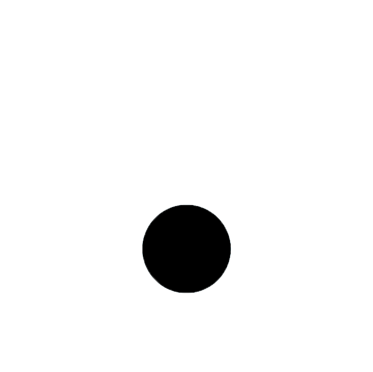

Serendipity
NOUN
: the phenomenon of finding utility in an unexpected discovery
The 3 steps of serendipity

Confluence
Serendipity starts with an unexpected collision of ideas. It could be anything from overhearing a conversation at the table next to you to accidentally dropping a science experiment onto the floor.


Attentiveness
The world is a chaotic place full of collisions, but you can’t find serendipitous moments unless you notice them. Maintaining attentiveness to your surroundings is integral to serendipity.

Insight
The last step of serendipity is having a hunch that the accidental collision you just noticed could be useful for something. This could be a Eureka moment, or could be dormant for years before the utility becomes clear.